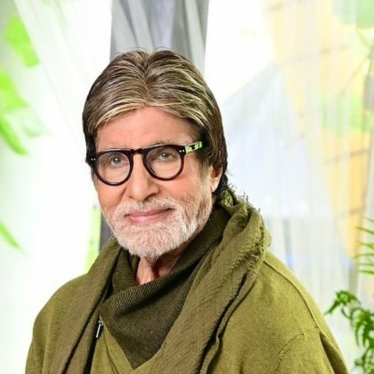

Amitabh Bachan
Amitabh Bachchan, (born October 11, 1942, Allahabad, India), Indian film actor, perhaps the most popular star in the history of India’s cinema, known primarily for his roles in action films.
Bachchan, the son of the renowned Hindi poet Harivansh Rai Bachchan, attended Sherwood College in Nainital and the University of Delhi. He worked as a business executive in Calcutta (Kolkata) and performed in theatre before embarking on a film career.

Alia Bhatt
Alia Bhatt (born 15 March 1993) is an actress and singer of Indian origin and British citizenship, who works in Hindi films. The recipient of several accolades, including four Filmfare Awards, Bhatt is one of the highest-paid actresses in India.
She has appeared in Forbes India's Celebrity 100 list since 2014 and was featured by Forbes Asia

Salman Khan
Abdul Rashid Salim Salman Khan was born on December 27, 1965, in Mumbai to legendary screenwriter Salim Khan, who penned many super-hits in the yesteryear's like Sholay (1975), Deewaar (1975), and Don (1978). Khan started his acting career by doing a supporting role in the movie Biwi Ho To Aisi (1988). The following year he had the leading role in the box office romantic hit When Love Calls (1989).
From there he became a heartthrob of Indian cinema.